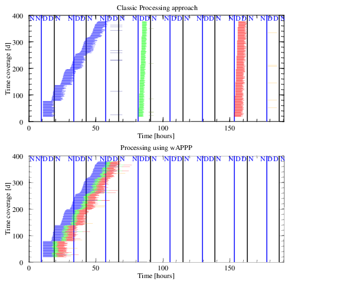

Automated Processing for GlobTemperature
Introduction to wAPPP
Automated Data Processing Workflows
List of Automated Processing (AP) tools
Pre-defined processing blocks
Create your own processing blocks
How to create a workflow from scratch
AP_runPipeline features
AP_runPipeline predefined variables:
Specifying dates and ranges of dates
Specifying extra dimensions
Altering template control files.
Data transfers blues
Introduction to wAPPP
The scripts part of the Workflows for Autonomous Parallel data
Processing Pipelines (wAPPP). package were designed to automate data
processing as much as possible, from the data-acquisition phase through
several levels of processing and quality control to data-export for data
normally spanning a long period of time, from months to years.
The main aspect of this approach is to make the processing "granular", and
the most appropriate granule for GT is a single day. We then ignore the
time component and concentrate in the design of the processing needed for
just one day.
Tools have been designed to work under this scenario, and
it is only when the processing needs to be performed that we instruct them
to cover a period of time (from the command line).
The main objective of wAPPP is to take full advantage of the parallel
engines we have access to: alice, CEMS, sending individual tasks to
different nodes when applicable.
The old way of doing things:
- Do some processing involving a long period of time, months to years
- Acquire all the data
- Then, double (triple) check that all data is in.
- Examine the log files and check that individual acquisition tasks
completed correctly, resubmit when fails have occurred.
- Launch a processing step involving the whole period of time.
- Examine the log files and check that individual processing tasks
completed correctly and resubmit then fails have occurred.
- Repeat these steps for other processing steps.
- Once all processing tasks have been completed, double check that
everything was processed as expected.
- Export the products of these processing tasks to external servers.
wAPPP way of doing things involves running the same steps with three main
differences:
- The launch of procedures is software controlled.
- Processing is done in a modular basis, and as soon as one task is
completed, tasks which depended on it are launched.
- Verification that each task concluded correctly is done without human
intervention.

As the new approach does not need to wait that all days/modules have been processed
to the same level, the dead time is minimised and whole procedures can
finish in fraction of the time it took following the previous methods.
Automated Data Processing Workflows
An wAPPP workflow should be viewed as a set of
tasks which need to be performed and forms a well defined "package", or projcet.
For instance, processing MODIS data to produce a level 3 product, or
running some data quality control tool on data related to a mission are examples of data
processing workflows.
A brief description of what a data processing workflow (DPW).
- A DPW can have as many tasks as necessary.
- The tasks for a DPW are defined in a special file (a task-manager file or tm-file), where properties of the tasks to run are defined.
- AP_task-manager requires the tm-file as well as the dates for which the DPW tasks need to be applied.
- Each task is self-contained and is executed by AP_runPipeline.
- Tasks are defined generically, regardless of the range of dates they will be applied to.
- Users can impose restrictions as to when tasks can be run, time of
day, day of month, month, day of week.
- Tasks are assigned maxMemory and wallTime in case they get submitted
to the grid engine.
- It is possible to limit the number of parallel processes used for a
given task.
Limiting the number parallel executions of a given task is advisable
for data transfers or if the parallel disk system would collapse if all
tasks were executed at the same time.
- The task manager provides a way to associate other variables (usually spatial variables) to all tasks in a workflow or to individual tasks. A task to analyse in-situ data to be applied to a large number of ground stations may use this feature, and processes will be launched to analyse all stations in all the dates covered.
- Tasks may have dependencies on another tasks. This means that if a
task depends on the successful completion of another, it will only be
executed when all the tasks it depends on have completed.
- If a task fails a finite number of times, it is declared "dead", and
all tasks which depend on it are marked as "dead" as well.
- Tasks with no dependencies will be executed right away, unless the
number of parallel tasks of that kind is limited.
- Tasks run whenever possible, many times depending on the load of the
parallel system, but no time is wasted if the task is completed at 2am and
a new task, which depended on the previous one can be launched within
minutes.
- Parallel systems are not perfect, and sometimes jobs are killed
because of system issues, not because of the software running. wAPPP tools
examine the log files describing these errors and tasks are resubmitted with
increased values of requested resources like memory usage or maximum
execution time. This process is repeated until the task completes
correctly.
- Tasks from another project can be imported into a new project using the tools to build a workflow. More on
that later.
The Automated data processing workflow is a toolkit. There is a core
of tools designed to perform the most common tasks and to control the
execution of them. Following is a description of the tools from the most
relevant to the very specific ones.
When run without argument each of these tools produce a usage message.
All these tools are located in one directory:
$(SITE_PATH)/SOFTWARE/SCRIPTS/AUTOMATED_PROCESSING
SITE_PATH can be /data/atsr if working in Alice or
/group_we...CEMSpath...
- AP_processing-daemon
- Is a tool designed to work as a daemon, running all the time which
launches the AP_task-manager once a day. It is designed to handle
data processing in near real time mode (NRT), i.e., it processes one day
at a time as close to the current date as the data producers release their
data.
NRT processing is a low data volume processing regime.
AP_processing-daemon tasks-description-file
- AP_task-manager
- Is the tool in charge of launching and monitoring tasks. This tool
gets its instructions from a file (a "tm-file") which contain the
definition of the tasks to execute, any temporal restrictions to launch
tasks, the HPC resources needed, the pipeline to execute and a list of
tasks which need to be completed to run the task (dependencies).
A pipeline is what defines the "know-how" of a particular task and this is
handled by the AP_runPipeline tool.
All the rules about running tasks described above are controlled by the
task-manager.
Usage: AP_tasks-manager tasks-description-file date-string [extraDim=file-with-list-of-values]
The first argument is the tm-file, the second is a string containing the
date (or range of dates) for which data will be analysed. There is a
dedicated section to describe the various forms the
date-string can take and how to take advantage of its features.
There is also a piece of software which invokes the same subroutine used by AP_task-manager and AP_runPipeline to get the dates. Try test_dateString with a given string to see the list of dates obtained.
Note that both AP_processing-daemon and AP_tasks-manager use
the same input file.
Note as well that AP_tasks-manager can be launched using standard
Unix tools like crontab
- AP_runPipeline
- It is the tool which applies all the knowledge of what to do in each
task. The previous tools are totally generic, you could be doing LST
data processing, Supernovae search data processing, or running a sequence
of simulations, they don't care.
Each pipeline encapsulates a number of procedures which are part of the
whole workflow, and each pipeline defined need to be carefully constructed
and tested before it is given to the task-manager tools.
The most common kind of tasks (pipelines) are:
- dlftp-: Data download normally using ftp from external sites
- ulftp-: Data upload normally using ftp to external sites
- rsync-: Data transfer upload or download using 'rsync'. This requires
that the user have accounts in the local and remote site.
- proc-:Data processing usually involving code (processors) written in
Fortran or other fast language. In GT, this is the bread and butter. It is
possible (and advisable) to let these pipelines examine whether the
processor conclude successfully and communicate this fact, and if it has
not concluded successfully, also communicate it.
- dqc-: Data quality assurance (or QC) to assure that the products of
the processing satisfy pre-defined quality standards.
- dxst-: Presence of data to make sure that data are available to be used
by a given processor. There is no point in running a processing pipeline if
vital data are not present.
- Of course it is possible for users to define their own pipelines
(ud-), which may contain a number of verification steps as
well
Usage: AP_runPipeline pipe-file date-string [varName=varValue] [-exec] [-slave]
AP_runpipeline has the capacity to submit jobs to a grid engine, and most
tasks can then be submitted to individual nodes. Some tasks however, need
to be executed from the login-nodes because of access limitations or
because they are very short tasks and it makes no sense to submit them as
parallel jobs; for instance, tasks which verify whether data is present in a
directory.
As AP_runpipeline is the tool at the core of wAPPP, it is described in
details in its own section.
The following two tools were created to assist users in the creation of
workflows.
- AP_aurora
- If there is siri and there is alexa, well, wAPPP has "aurora", or the
AUtomated pROcessing Runtime Assistant. As its
name suggests, AP_aurora can help users define their workflows in an
assisted way, presenting a battery of questions, all fundamental to build a
good workflow. AP_aurora, however, can also provide users with minimal
information for them to build their projects independently.
- AP_assistant
- It is a tool also designed to assist in the creation of the workflow
structure. AP_aurora makes use of AP_assistant, and in some modalities,
users can invoke it directly with adequate arguments to complete several
stages of the development.
Examples of how to use these tools are given in the How to create a workflow from scratch.
The following tools were created to be part of AP_runPipeline ancillary
tools. Each tool does a specific set of jobs and has a way to communicate
with AP_pipeline based on what they print to STDOUT. These tools can be
written in any language. Most of them are written in Perl, but some are
written in python because they have to run in several sites, and sometimes
the deployment of perl is not uniform across sites. At least that is the
case for ftp functionalities.
AP_runPipeline really doesn't care in which language these tools are
written. Users could enhance this toolkit writing tools in any other
language, like ruby, shellscript, C, C++, Java, etc.
Although the tools are invoked by AP_runPipeline, they are all runable from
the command line, and it would be good if you familiarize with them at some
point. They may become handy as standalone tools as well. I've used some
constantly.
AP_createTM_pipeFiles
This tool is invoked by AP_assistant, and it can be invoked
by the user for only a very specific purpose: to create two workflow
files. These files are then used by AP_runPipeline and contain all
the instructions and knowledge to perform specific tasks.
The input files used as arguments to AP_createTM_pipelines are
initially created from predefined tasks by AP_assistant. These files
are editable by users and more instructions that the default ones can be
added for AP_runPipeline to execute.
Usage: AP_createTM_pipeFiles parameters-file local-tasks parallel-tasks walltime maxMem
walltime is expressed in decimal hours and maxMem is expressed in Megabytes.
Pre-defined processing blocks
AP_contentRetriever
It examines the content of a directory. It lists the content of a directory
if only the first argument is given. If a pattern is provided, it lists
only the filenames where that pattern is present.
If the name of a file is given (the data tracer) it prints '1' if the file
exists or '0' otherwise.
If '-count' is given, instead of a list of files it presents the total
number of files or the number of files which contain a pattern.
This is one of the tools which can be used standalone.
Usage: AP_contentRetriever path=path [fp=pattern dt=data_tracer [-count]]
AP_examineGT_LOG
AP_extractProcessedTimestamps
AP_ftpDownload.py
AP_ftpUpload.py
AP_fvFtpDownload.py
AP_getAvailableTimestamp
AP_locateUnprocessed
AP_makeSingleCtlFile
AP_spotUnbalancedAUX_LST
AP_verifyGtProducts.py
AP_xwrapper
Create your own processing blocks
This package was created with one thing in mind: processing EOS satellite
data, hence, all the blocks defined for that purpose.
Other fields can certainly benefit from using this approach to data
processing and the door is open to create your own dedicated task blocks
(TB).
When creating a TB in whatever languge you want, it is necessary to be more
uniform and follow certain rules for its API and how information is passed
with its status so that both the creation tools and the processing tools
can use this information to build the pipeline files.
The following rules must be followed, regardless of the language the TB is
written in.
- Parameters are to be passed as command line arguments in the form
key=value.
Use as many as necessary, and the order in which the parameters is given
should not matter.
Ideally, default values should be defined for all necessary parameters in
case a parameter is omitted from the command line.
How to create a workflow from scratch
Although workflows are quite complex and a lot of information needs to go
there, wAPPP offers a relatively simple way to create your first workflow.
Previous to launch any command, it would be good if you write down in a
piece of papers just the name of the tasks your workflow will contain and
for each task, on which other task they depend. A processing task will not
work if the data-downloading task has not been completed, right?
It is quite possible that some logical considerations may require you to
alter the number of tasks defined in the first draft.
A task should be something quite specific: do this for a specific period
of time; say the task is completed.
All steps described below require you to work from a terminal, using
command-line tools and your favourite editor.
The following steps are recommended:
- Add the directory which contains this file to your PATH in your shell
initialising rc-script. In that way, you can run the scripts here from any other
directory.
-
If this is the first time you use wAPPP, run AP_assistant
without any argument. This will create the file
$HOME/.automatedProcessing describing the system
in which you are working.
If you are working on an HPC system,
make sure to do this in the main nodes (but this is highly HPC-system
dependent)
- Decide on the file structure you will use to store the tasks and pipelines.
- Create a directory for you to start working, e.g.,
$HOME/myDataProcessing
Chances are that after the first
attempts, you will decide on a different naming convention. Refrain from
moving files to a new site, many of these file do contain the name of the
directory where they are located. It is easier to repeat these steps.
- Change directory to $HOME/myDataProcessing
- Run AP_aurora (no arguments)
Aurora will ask you a few questions and potentially it will create the
first steps to create one processing workflow.
You will be asked to give your workflow a name, choose a meaningful one to
you.
You will also be asked over how many days the workflow should operate,
answer 1 to start with.
If you called your workflow computeTemperature, then Aurora
created a directory called computeTemperature as well as a file
called computeTemperature.aurora_in with the answers you gave
Aurora.
- Change directory to ./computeTemperature
Two files were created: AP_project, which just contains a line
with the name computeTemperature; this file is later used to
locate other resources.
The file computeTemperature.bb was also created. 'bb' stands for
'bare-bones', in other words, it is a file which contains the description
of the workflow at the highest possible level: a list of tasks and their
dependencies. If you did write those tasks in a paper, the 'bb' file is
where you will use them.
- Edit computeTemperature.bb to copy the content of your piece
of paper.
This file is not empty, and it contains a short guide to what needs to be
added. The most important piece of information is that it shows the
convention you should follow to name the tasks you need to execute as part
of the workflow.
AP_runPipeline features
AP_runPipeline predefined variables:
Yeh shall not use any of these patterns inside your own definitions within
runPipeline files. Of course you can use them to form paths or other elements.
- YYY: The year being processed when in daily mode
- Y2D: The last two digits of the year: 2017 -> 17
- MMM: The month being processed when in daily mode: june=6
- SMM: The month being processed when in daily mod: june=06
- DDD: The day being processed when in daily mode, 1 = 1
- SDD: The year being processed when in daily mode, 1 = 01
- SDOY: The day of the year zero-padded to 3 digits (e.g., 032 = Feb 1)
- IDOY: The day of the year as an integer (e.g., 32 = Feb 1)
Specifying dates and ranges of dates
wAPPP uses a special notation to handle dates as the objective is to
be able to express ranges of dates which will be used to trigger tasks.
The following is a list of valid notations:
| String | results |
| 2001-01-01:2010-03-31 | Lists all days between 2001-01-01 and
2010-03-31 |
| 2001-01-01:2010-03-31/dt=1month | Lists all months between
2001-01-01 and 2010-03-31 |
| 2001-01-01:2010-03-31/dt=1year | Lists all years between
2001-01-01 and 2010-03-31 |
| 2,5,6@2002:2007 | Lists all days for the months of February,
May and June of the years 2002 to 2007 |
| 2,5,6@2002:2007/dt=1month | Lists all months of February,
May and June of the years 2002 to 2007 |
| today-local-time | Inserts the current date in local (zone) time. |
| today-universal-time | Inserts the current date in universal time (GMT). |
| yesterday-local-time | Inserts yesterday's date in local (zone) time. |
| yesterday-universal-time | Inserts yesterday's date in universal time (GMT). |
| tomorrow-local-time | Inserts tomorrow's date in local (zone) time. |
| tomorrow-universal-time | Inserts tomorrow's date in universal time (GMT). |
| |
The point is that it is possible to specify the time resolution, which by
default it is 1 day by using the dt= option
Use test_dateString (part of the wAPPP distribution) to test different
variations of how to write dates and the results to expect.
The entries with "today", "yesterday", and "tomorrow" allow invoking
AP_tasks-manager using system automated tools as cron
avoiding the need to specifically declare the date in the form YYYY-MM-YY.
Altering template control files.
Control files in GlobTemperature contain the information required by a
given processor to do its task. Setting them up correctly is vital and it
is not a task to be overlooked.
Collections of template control files can be found both at CEMS and Alice
and any other site GT code runs.
Processing tasks in wAPPP context require you to provide a template control
file to be incorporated inside the project's structure, usually inside the
"pipelines/task-name" directory. That control file now is yours to modify,
particularly paths and whatever piece of information is necessary to use as
a true template for this wAPPP task.
The template file will then be used to generate the necessary template
files for a given day, station, or whatever the task is concerned about.
AP_makeSingleCtlFile and AP_flexibleMakeCtlFile are tools to
help you use your template file and produce new control files with
appropriate values, particularly for the dates. Any parameter in the
control that needs change but applies to all elements in the pipeline
should be changed in the template control file instead.
Before running your pipelines, please do make sure that the control files
created are exactly how they are supposed to be. For that, run any of the
tools mentioned above from the command line and double and triple check
that everything is correct.
To do so, I usually do:
AP_CtlFile template_ctl_file [arguments] > ~/newCtl.cf
diff template_ctl_file ~/newCtls.cf
The differences should tell you what has been changed.
Data transfers blues